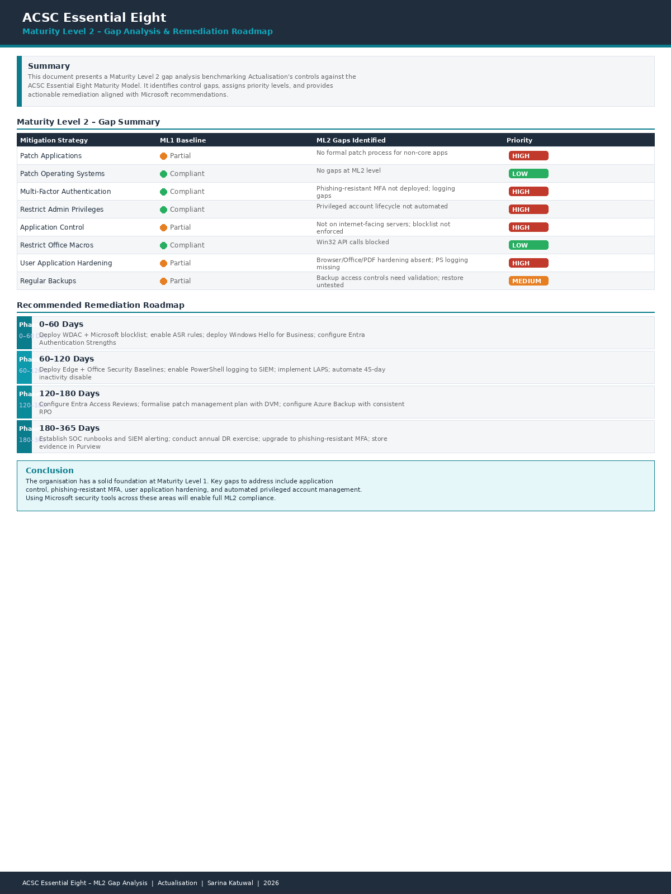

Cybersecurity Analyst (GRC) & Quality Assurance Engineer transitioning into a cybersecurity career with 5+ years of fintech QA experience and hands-on GRC internship exposure.
Five years in fintech QA, now building a cybersecurity career through formal study and hands-on GRC internship experience.
Real deliverables from my internship and QA career. Replace placeholders with your screenshots when ready.
A rare combination of security testing, GRC compliance experience, and deep QA engineering expertise.
Reflecting on my career journey through the lens of career development theory — from fintech QA to cybersecurity GRC professional.
Looking back, my move from QA into cybersecurity was not a sudden decision — it happened gradually through the work I was already doing. Security testing, writing VAPT reports, and validating access controls were all part of my QA role at F1Soft, but they were quietly pulling me toward security without me fully realising it at the time. Moving to Australia and starting my Master of ICT gave me the space to make that shift intentional.
The GRC internship at Actualisation was the moment things clicked for me. Working on the Essential 8 gap analysis and presenting risk findings to the CISO showed me that cybersecurity is not just technical — it requires communication, judgement and strategic thinking. That is the kind of work I want to build my career around.
Going forward, my plan is to complete my master's, secure a graduate GRC or security analyst role in Australia, and then work toward certifications like CISA or CISSP. I am not waiting until I feel completely ready — I have learned that readiness comes from doing, not from preparing to do.
Industry-recognised certifications supporting my transition into cybersecurity.
